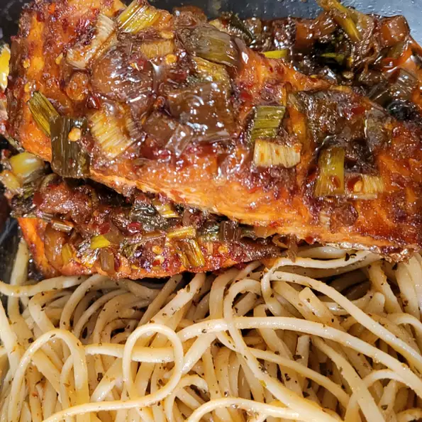

Firecracker Grilled Alaska Salmon

Ingredients
- 8 (4 ounce) fillets salmon
- ½ cup peanut oil
- 4 tablespoons soy sauce
- 4 tablespoons balsamic vinegar
- 4 tablespoons green onions, chopped
- 3 teaspoons brown sugar
- 2 cloves garlic, minced
- 1 ½ teaspoons ground ginger
- 2 teaspoons crushed red pepper flakes
- 1 teaspoon sesame oil
- ½ teaspoon salt
Directions
- Place salmon filets in a medium, nonporous glass dish. In a separate medium bowl, combine the peanut oil, soy sauce, vinegar, green onions, brown sugar, garlic, ginger, red pepper flakes, sesame oil and salt. Whisk together well, and pour over the fish. Cover and marinate the fish in the refrigerator for 4 to 6 hours.
- Prepare an outdoor grill with coals about 5 inches from the grate, and lightly oil the grate.
- Grill the fillets 5 inches from coals for 10 minutes per inch of thickness, measured at the thickest part, or until fish just flakes with a fork. Turn over halfway through cooking.